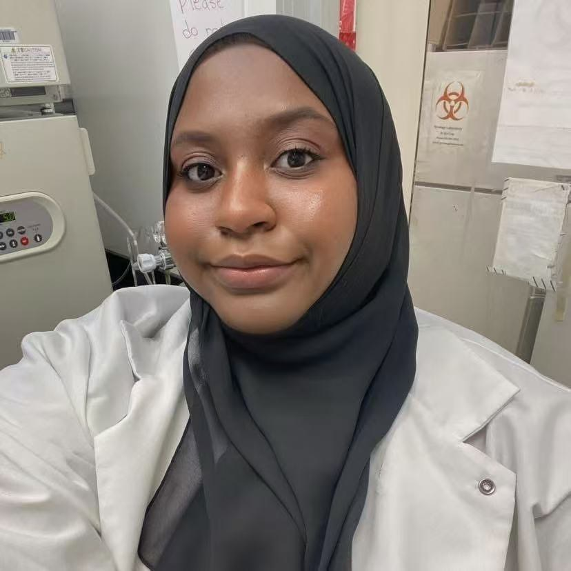

Qiyi Tang, Ph.D., M.D.
Professor, Department of Microbiology
Dr. Tang leads research on virus–host interactions, molecular virology, gene regulation, signal transduction, and cellular innate defenses.
People
Tang Lab brings together faculty, research staff, and graduate researchers working across molecular virology, host response, and viral pathogenesis.
Principal investigator
Dr. Tang leads research on virus–host interactions, molecular virology, gene regulation, signal transduction, and cellular innate defenses.
Research staff and faculty collaborators
Supports molecular virology, cell-culture, and flavivirus projects, with public coauthorship on ZIKV and lipid-droplet publications.
Graduate researchers

Contributes to virology projects at Howard University, including public work on humanized immune-system rodent models and flavivirus ER stress biology.
Works at the interface of virus–host interaction, lipid metabolism, viral vectors, and infection-associated neural or cardiac injury models.
Former Members
Johns Hopkins University
Princeton University
The Department of Anatomy at Howard University
Howard University